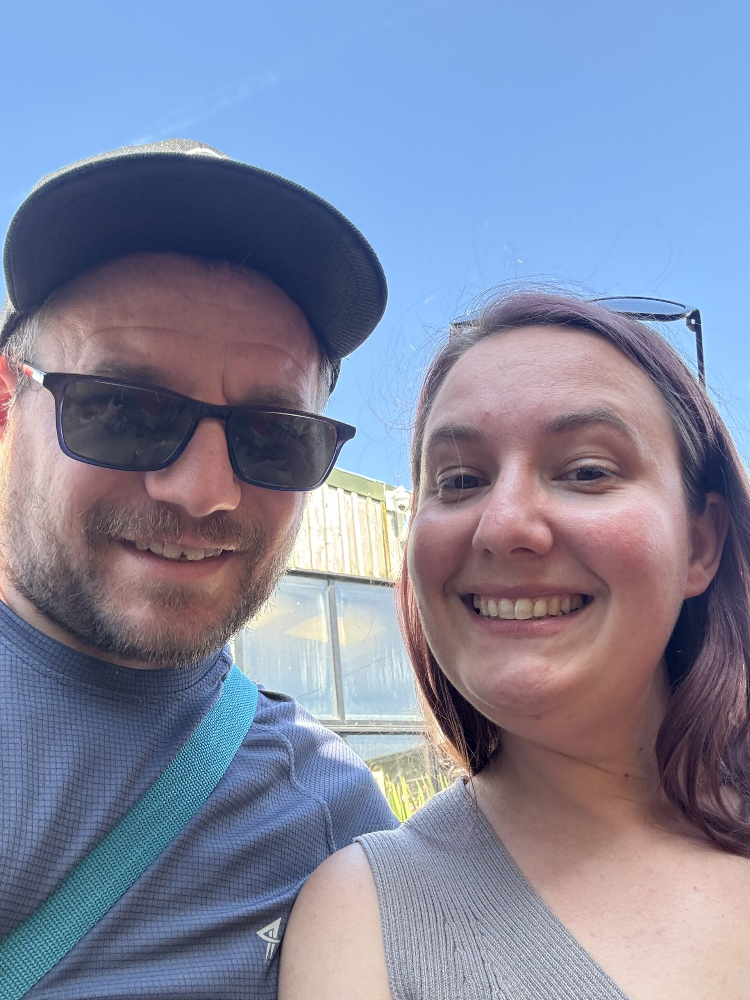

About us
Our story, our heart, and the people behind Coopers Edge Community Church.
A community shaped
by God's love
Think of a jigsaw puzzle — piece by piece, God is bringing something beautiful together in Coopers Edge. We are still early in our story, and we know we'll look very different in five or ten years. But our calling and core values remain constant.
We exist to be a community where people of all ages can belong, grow, and flourish — connecting with God, with one another, and with our wider neighbourhood.
What shapes us
Real & Generous Community
A community that is real with one another, reflecting the overwhelming generosity of God in all we do. We want honest, open relationships — not a polished performance.
Founded in the Bible
We are committed to taking God's word seriously, making biblical teaching accessible to all as we grow in understanding Scripture together — whatever your starting point.
Fuelled & Sent by the Spirit
We seek to be a community empowered by the Holy Spirit, transforming people to become more like Jesus and enabling mission through spiritual gifts and miraculous works.
On Mission for Coopers Edge
We share God's love to bless this community. Coopers Edge is our neighbourhood, and we are called to be good news here — practically, relationally, and spiritually.
How we came to be
Coopers Edge Community Church is young — but the vision behind it has been growing for over a decade. Here's how God has brought us to where we are today.
A vision takes root
The Diocese of Gloucester began envisioning a new Christian community for Coopers Edge — a rapidly growing housing estate in Brockworth, Gloucester. The neighbourhood was expanding, and the Church recognised the need for a local, rooted presence.
Simon & Jennifer move to Gloucestershire
Simon and Jennifer, called to pioneer this new community, relocated to Gloucestershire with their young family. Simon began his ordination training as a Curate, and Jennifer began her own pathway toward becoming a vicar — both preparing for what lay ahead.
A community begins to gather
A small, excited group began to form around the vision for Coopers Edge. These early pioneers spent time together in prayer, fellowship, and building relationships in the neighbourhood — laying the spiritual and relational foundations for what was to come.
Official launch
Coopers Edge Community Church officially launched — a milestone moment for Simon, Jennifer, and everyone who had been working and praying toward this day. A new congregation, rooted in a new community, began its life together.
Growing together
We are a young, growing congregation — still finding our shape, still welcoming new people, and still expectant about what God will do in and through us in Coopers Edge over the coming years. If you're reading this, you might be part of the next chapter.
Who's who
We are led by a small, passionate team of people committed to Coopers Edge and its community. We'd love for you to come and meet us.
Leadership Team
Simon
Simon is an ordained Church of England Curate and one of the founding leaders of Coopers Edge Community Church. He and his wife Jennifer relocated to Gloucestershire in 2018 with their young family to begin laying the groundwork for this congregation.
Jennifer
Jennifer co-leads the church alongside Simon and is currently training to become a vicar. Together they share a deep love for Coopers Edge and a vision for what God is doing in this community.

Chris & Jess Neale
Chris and Jess lead our Connect Sunday gatherings, helping to create welcoming, smaller-group environments in homes across Coopers Edge. They moved from East London with their two teenage sons.
Safeguarding Team
Ben Fudge
Ben serves as our Parish Safeguarding Officer, ensuring Coopers Edge Community Church is a safe and welcoming environment for everyone — children, young people, and adults alike.
Coopers Kids Team
Sarah Wallace
Sarah leads the core team for our younger children in Coopers Kids, creating a vibrant, fun, and faith-filled environment for the little ones each Sunday.
Sarah Fudge
Sarah co-leads the younger children's group in Coopers Kids, bringing warmth, creativity, and a love for children to her role each week.
Jess Neale
Jess leads the team for our older children in Coopers Kids, helping them explore faith, ask big questions, and grow in confidence and community.
Jordan Murrison
Jordan co-leads the older children's group, contributing energy, creativity, and pastoral care to the young people in our community.